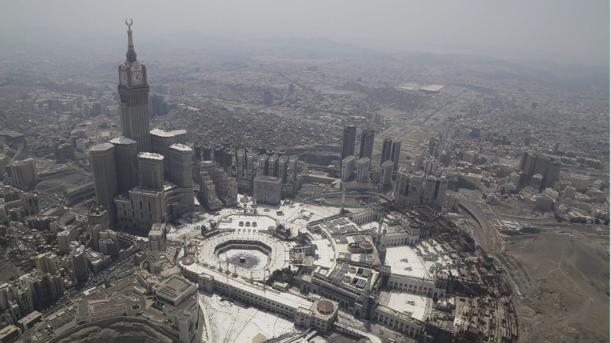
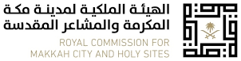
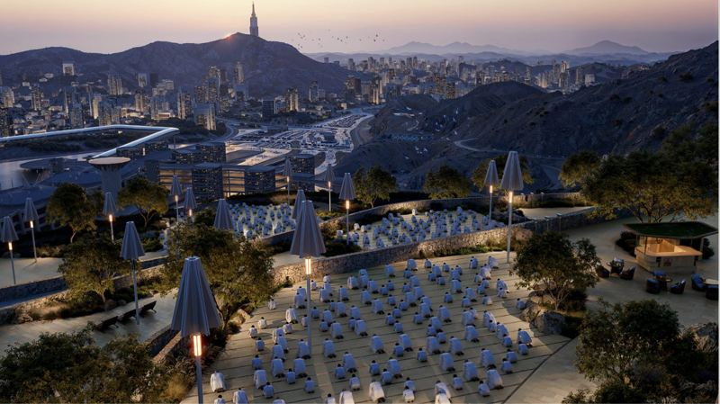
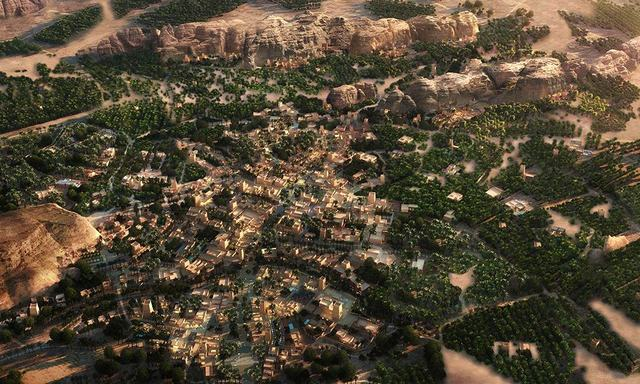
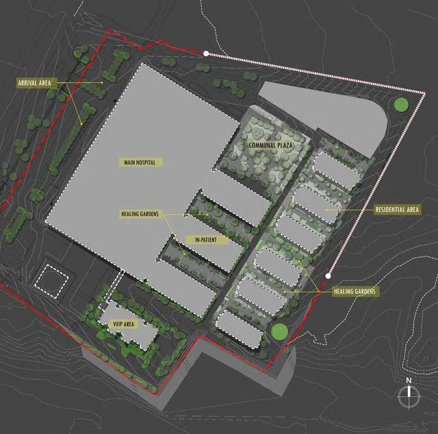

Al Mashaaer Al Mugaddassah Master Plan
Master plan · Makkah (Mina, Muzdalifah, Arafat), Saudi Arabia
Strategic master plan for the holy sites of Makkah (Mina, Muzdalifah and Arafat), for Kidana Development Company on behalf of the Royal Commission for Makkah City and Holy Sites.
Client

Kidana Development Company (KDC), on behalf of the Royal Commission for Makkah City and Holy Sites (RCMC)
More from Makkah

Jabal Thabeer Park (Mina, Makkah)Mina, Makkah · 2025 Kidana Al Khaif (Mina, Muzdalifah and Arafat)Makkah (Mina, Muzdalifah, Arafat) · 2024-2026
Kidana Al Khaif (Mina, Muzdalifah and Arafat)Makkah (Mina, Muzdalifah, Arafat) · 2024-2026 Jorhum DestinationMakkah · 2026
Jorhum DestinationMakkah · 2026
AlUla Strategic Framework PlanAlUla · 2022 Majar Al Kabsh Pre-Concept DesignMina, Makkah · 2025
Majar Al Kabsh Pre-Concept DesignMina, Makkah · 2025
NEOM Hospital Landscape Conceptual MasterplanTabuk (NEOM) · 2022-2023